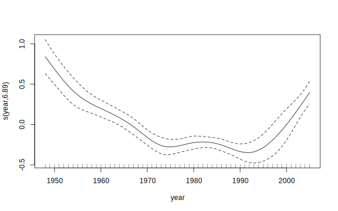
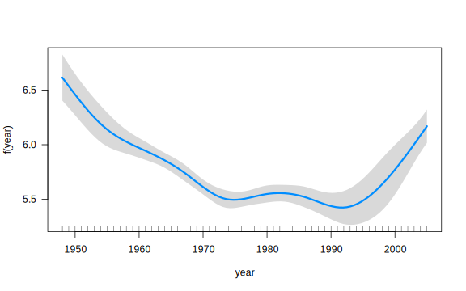

Practical GAM
One of the more powerful modeling packages in R comes with its installation5. The mixed gam computational vehicle, or mgcv package, is an extremely flexible modeling tool, and one we’ll use for our foray into generalized additive models. If you’re familiar with standard regression models, the syntax is hardly different, but adds a great many possibilities to your modeling efforts.
Getting started
So GAMs can be seen as a special type of GLM, that extends the model to incorporate nonlinear and other relationships, but while keeping things within a familiar framework. Behind the scenes, extra columns are added to our model matrix to do this, but their associated coefficients are penalized to help avoid overfitting.
As we will see, the main syntactical difference between using gam and using glm is that you’ll use the s function to incorporate smooth terms, or classes that include basis functions as we saw before, along with a penalty. Beyond what we did previously, mgcv also incorporates a penalized regression approach. For those familiar with lasso, ridge or other penalized approaches you’ll find the same idea here. For those new to this, it’s important to add the concept and technique to your statistical modeling toolbox.
Let’s look at some more interesting data. For the following example we’ll use the iris data set. Just kidding! We’ll look at some data regarding the Internet Movie Database (IMDB) from the ggplot2movies package. If you want to look at the original, you’ll need to install the package, and the data object within is called movies. For for information, type ?movies after loading the package.
However, our example will concern yearly averages based on that data set. The primary data set is movies_yearly, with a film budget variable that has been adjusted to 2016 dollars. In addition, I’ve grouped them by whether they are an action movie or not in a separate data set movies_yearly_action. And finally, the data has been filtered to contain only those years where there a decent number of movies to go into the calculations (10 or more for yearly, 5 or more for yearly_action), and feature films (length in minutes > 60).
library(ggplot2movies)
load(file='data/movies_yearly.RData')
Let’s examine the the time trend for ratings and budget. Size of the points represents the number of movies that year.
For ratings there seems to be a definite curvilinear trend, where initially ratings for movies started high and decreased, but were on the upswing at later years.
Adjusted for inflation, movie budgets don’t increase linearly over time as one might expect, and in fact were decreasing towards the end. Note that we only have adjusted budget data for 1948 on.
Fitting the model
Let’s fit a GAM to the yearly trend for ratings. I will also put in budget (in millions), movie length (in hours), and number of votes (in thousands) as standard effects. We’ll use a cubic regression spline for our basis, bs='cr', but aside from specifying the smooth term, the syntax is the same as one would use for the glm function.
library(mgcv)
gam_model = gam(rating ~ s(year, bs='cr') + budget_2016 + votes + length,
data=movies_yearly)
summary(gam_model)
Family: gaussian
Link function: identity
Formula:
rating ~ s(year, bs = "cr") + budget_2016 + votes + length
Parametric coefficients:
Estimate Std. Error t value Pr(>|t|)
(Intercept) 4.413e+00 9.674e-01 4.562 3.65e-05 ***
budget_2016 5.762e-05 3.613e-03 0.016 0.987
votes 3.921e-02 1.210e-01 0.324 0.747
length 8.192e-01 6.071e-01 1.349 0.184
---
Signif. codes: 0 '***' 0.001 '**' 0.01 '*' 0.05 '.' 0.1 ' ' 1
Approximate significance of smooth terms:
edf Ref.df F p-value
s(year) 7.064 8.063 28.01 <2e-16 ***
---
Signif. codes: 0 '***' 0.001 '**' 0.01 '*' 0.05 '.' 0.1 ' ' 1
R-sq.(adj) = 0.879 Deviance explained = 90.1%
GCV = 0.011817 Scale est. = 0.0095631 n = 58The first part of our output contains standard linear regression results. It is important to note that there is nothing going on here that you haven’t seen in any other GLM. For example, in this case there is no relationship between budget and rating, whereas adding an hour to the film might bump up the rating around near a point6.
Parametric coefficients:
Estimate Std. Error t value Pr(>|t|)
(Intercept) 4.413e+00 9.674e-01 4.562 3.65e-05 ***
budget_2016 5.762e-05 3.613e-03 0.016 0.987
votes 3.921e-02 1.210e-01 0.324 0.747
length 8.192e-01 6.071e-01 1.349 0.184The next part contains our information regarding the smooth terms, of which there is only one.
Approximate significance of smooth terms:
edf Ref.df F p-value
s(year) 7.064 8.063 28.01 <2e-16 ***While this suggests a statistically significant effect, it’s important to note there is not a precisely defined p-value in this setting- it clearly states ‘approximate significance’. For some more details see the technical section or my document, but for now, we’ll start with the effective degrees of freedom, or edf. In typical OLS regression the model degrees of freedom is equivalent to the number of predictors/terms in the model. This is not so straightforward with a GAM due to the smoothing process and the penalized regression estimation procedure. In this example there are actually 9 terms associated with this smooth, but they are each penalized to some extent and thus the effective degrees of freedom does not equal 9. For hypothesis testing an alternate edf is actually used, which is the other one provided there in the summary result (Ref.df).
The thing to note is that the edf would equal 1 if the model penalized the smooth term to a simple linear relationship7, and so the effective degrees of freedom falls somewhere between 1 and k-1, where k is chosen based on the basis. You can think of it as akin to the number of knots. The default here was 10. Basically if it’s 1, just leave it as a linear component, or if it’s close to k, maybe bump up the default to allow for more wiggliness.
Visualizing the effects
While the statistical result is helpful to some extent, the best way to interpret smooth terms is visually. The ability to do so is easy, you can just use the plot method on the model object. However, the default plot may be difficult to grasp at first. It is a component plot, which plots the original variable against the linear combination of its basis functions, i.e. the sum of each basis function multiplied by its respective coefficient. For example, if we were using a quadratic polynomial, it would be the plot of \(x\) against \(b_1\cdot x + b_2\cdot x^2\). For GAMs, \(y\) is also centered, and what you end up with is something like the following.
plot(gam_model)
So this tells us the contribution of the year to the model fit8.
For an alternative, consider the visreg package, which focuses on standard predicted values holding other variables constant, and it just looks slightly nicer by default while allowing for more control.
library(visreg)
visreg(gam_model, xvar='year', partial=F)
You of course can look at predictions at any relevant values for the covariates, as you can with any other model. Consider the following effect of time while keeping budget and length constant at their means, and votes at 10009.
movies_yearly %>%
na.omit() %>%
transmute(budget_2016 = mean(budget_2016),
length = mean(length),
votes = 1,
year=year) %>%
add_predictions(gam_model, var='Predicted_Rating') %>%
plot_ly() %>%
add_lines(~year, ~Predicted_Rating)In the end, controlling for budget, length, and popularity, movie quality decreased notably until the 70s, and remained at that level until the late 90s, when quality increased even more dramatically.
For reasons I’ve not understood, other packages still depend on or extend the gam package, which doesn’t possess anywhere near the functionality (though the authors literally wrote the book on GAM), or even the splines package, which comes with base R but has even less. If you’re going to use additive models, I suggest starting with mgcv until you know it cannot do what you want, then consider the extensions to it that are out there.↩
Presumably we have to justify the time spent watching longer movies. Note also I personally consider the length effect significant, despite the p-value.↩
You can actually penalize the covariate right out of the model if desired, i.e. edf=0.↩
This is the same as what the base R function termplot would provide for a standard (g)lm. You can request the plots be applied to the non-smooth terms in the model as well. And the residuals function has an argument,
type='partial'that can be applied to produce the partial residuals, which are theresiduals + term. See?termplotfor more info.↩If we had put votes at its mean, you would basically duplicate the previous plot.↩